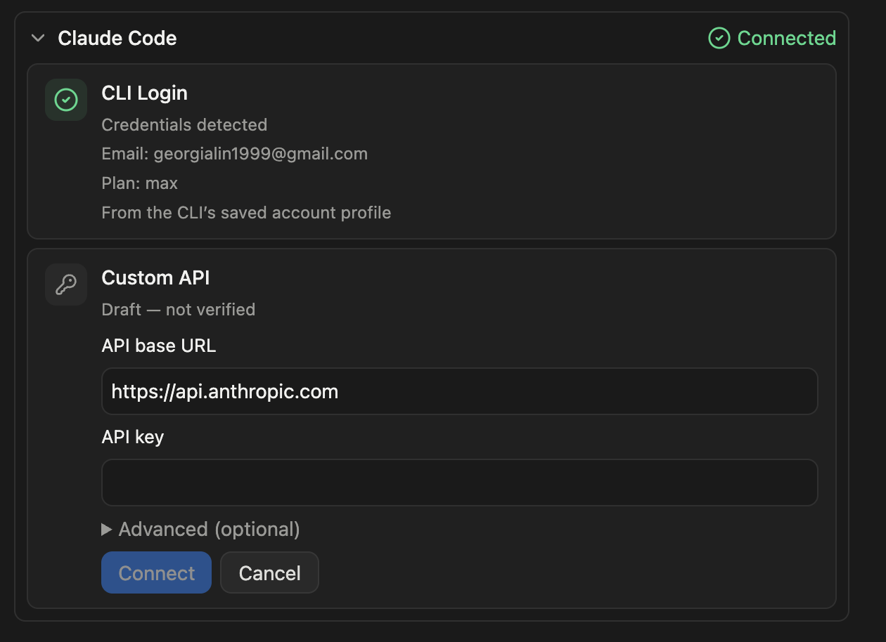
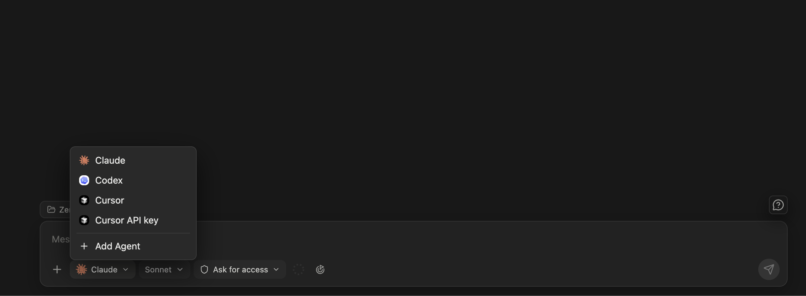
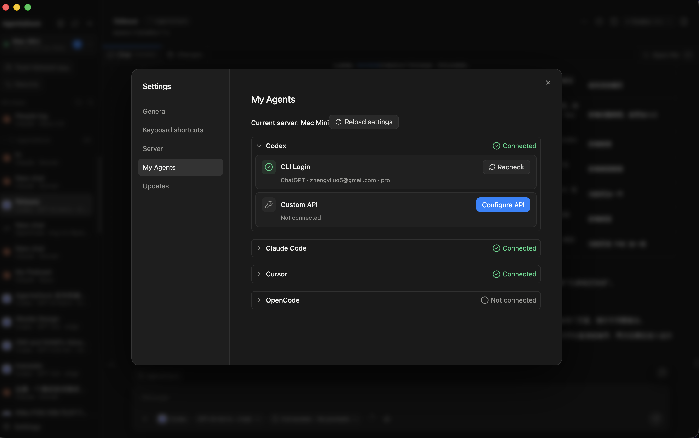

Docs
Connect and manage agents
AgentsDock supports Claude Code, Codex, OpenCode, and Cursor on the server you connect to. You can connect a provider in two ways: use the provider's own CLI login on the server, or configure a custom API endpoint for that provider.
Supported providers
Two ways to connect
- CLI Login uses the provider CLI or runtime installed and signed in on the remote server.
- Custom API lets AgentsDock use an endpoint and token/key you configure for this server.
CLI login
Run the login command on the machine that runs AgentsServer. After the provider finishes signing in, return to AgentsDock and recheck that provider.
# Claude Code
claude auth login
# Codex
codex login
# OpenCode
opencode auth login
# Cursor
cursor-agent login- Claude Code confirms authentication on the next message; rechecking only verifies the CLI is installed.
- Codex uses the Codex CLI login saved on that server.
- OpenCode uses
opencode auth loginfor the model provider you choose inside OpenCode. - Cursor may expose the binary as
cursor-agentoragent; use the name installed on your server.
If a provider still says Not connected, confirm you are looking at the right server, then click Recheck on that provider card.
Custom API
Use Custom API when you want AgentsDock to use an endpoint instead of the provider's normal CLI login. A custom endpoint usually needs an API base URL and an API key or token. Some providers also expose optional advanced fields such as protocol, model, or auth header.

- Claude Code custom API uses Anthropic-compatible endpoints.
- Codex exposes its provider-specific API configuration from its provider card.
- OpenCode custom API supports Anthropic, Chat Completions, and Responses-compatible endpoints.
- Cursor custom API uses Cursor's API endpoint and a Cursor API key.
Custom API settings are stored on the server you are configuring. If you use multiple servers, configure the endpoint on each server where you want it available.
Use it in a chat
After a provider is connected, start a new chat and use the provider picker in the lower-left corner to choose it. AgentsDock shows every provider that is ready on the current server, so switching servers can change the available list. If a provider has both CLI login and a custom endpoint, the custom endpoint appears as a separate choice from the CLI login.

Manage agent status
Open Settings → My Agents to see what is connected on the current server. This page is server-specific: if you switch from one server to another, the connected providers can change too.

Need the basics first? Install the client from Client install, connect a server with the Setup guide, then walk through Start your first chat.